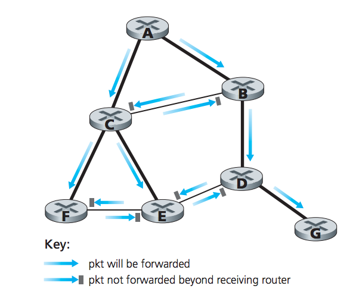

Given N destination nodes, the source router makes N copies of a packet, addresses each packet to a different destination, and transmits the N packets to the destinations. No new network routing protocol, packet-duplication, or forwarding is neccessary.
Drawbacks
Technique for achieving broadcast in which the source node sends a copy of the packet to all of its neighbors. If the graph is connected, it will eventually deliver a copy of the packet to all nodes in the graph
Drawbacks
To avoid a broadcast storm a node msut choose when to flood a packet, or not flood a packet. In sequence-number-controlled flooding, a source node puts its addresses as well as a broadcast sequence number into a broadcast packet, then sends the packet to all of its neighbors. Each node has a list of the source address and sequence number of all packets it has received, duplicated, and forwarded.
Reverse path forwarding (RPF), also referred to as reverse path broadcast (RPB), is when a router receives a broadcast packet with a given source address, it transmits the packet on all of its outgoing links if the packet arrived on the link that is on its own shortest unicast path back to the source. Else, the router sicards the packet.
